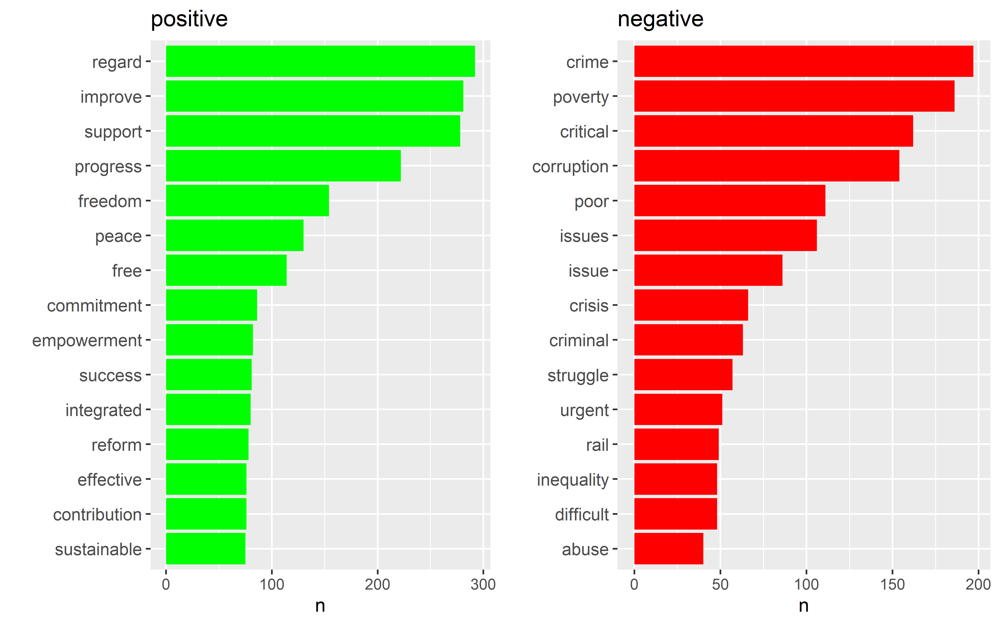
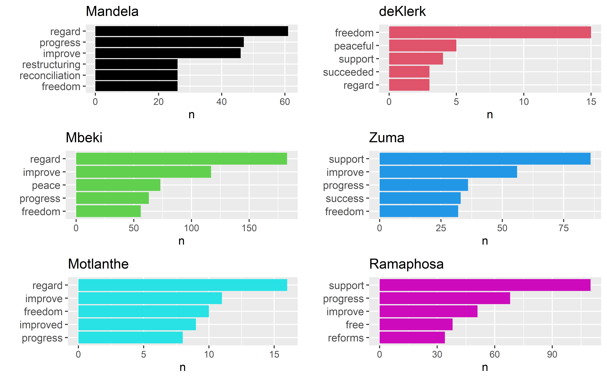
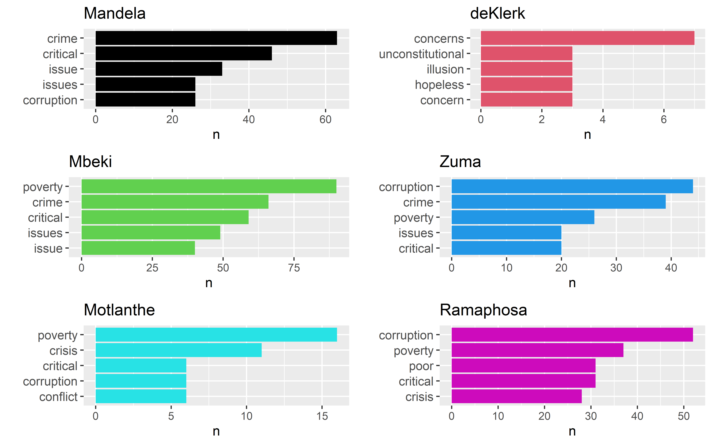
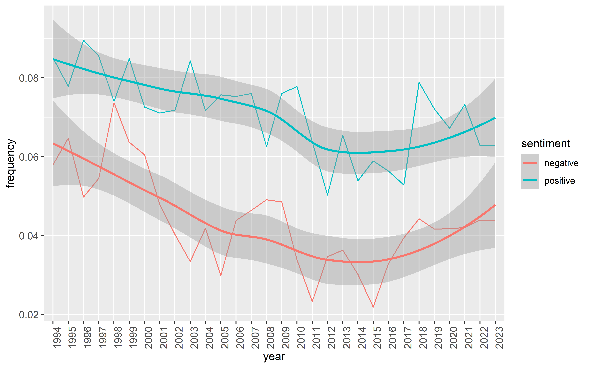
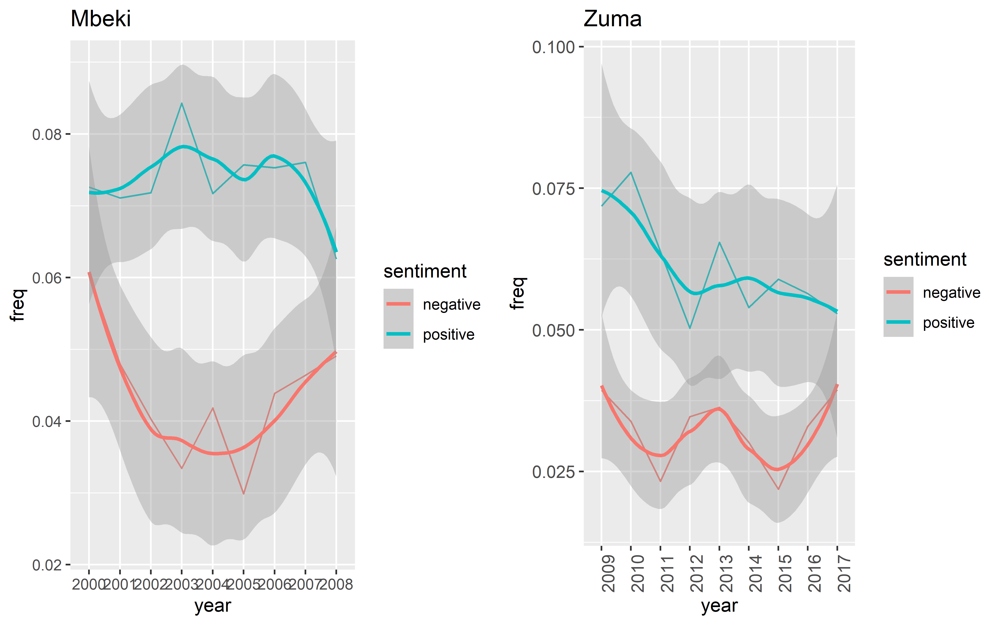
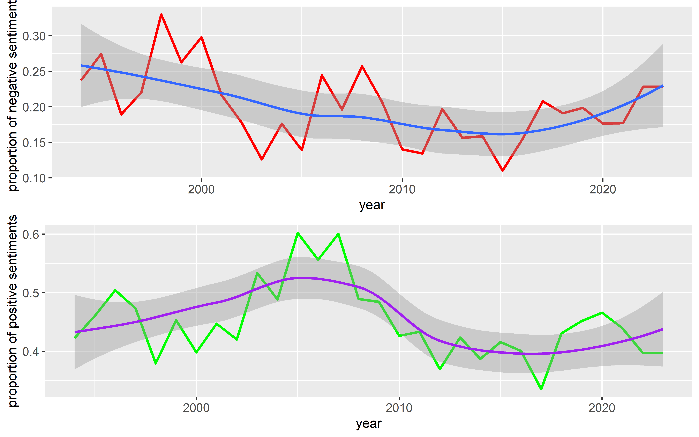
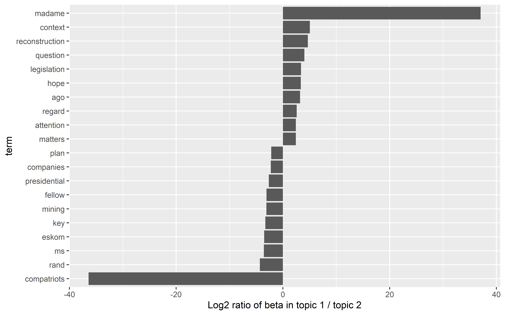
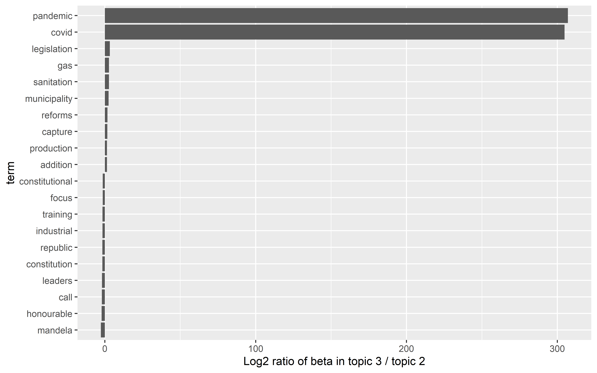
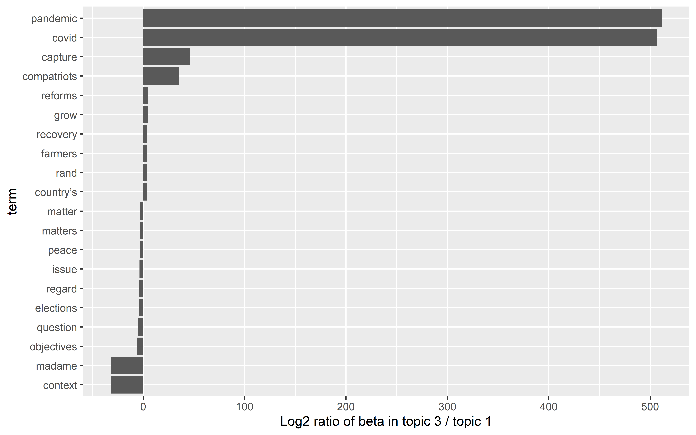

Data Science for Industry Assignment 2
Abstract In this paper, we explore the integration of Latent Dirichlet Allocation (LDA) , a powerful topic modeling technique, and sentiment analysis to uncover deeper insights from textual data. Textual data analysis has gained significant importance in various domains, such as social media, customer reviews, and Large Language Model. While LDA is widely used for topic extraction, and sentiment analysis is employed to determine the emotional tone of texts, combining these two techniques can yield a more comprehensive understanding of text data. The objective of this paper was to conduct descriptive analysis using these methods. Our descriptive analysis of the presidents’ SONA speeches using LDA topic modeling and sentiment analysis find some minor differences in the tone of the words and sentence used by the presidents. However, LDA managed to pick up that speeches occurring the during the Covid-19 years were about Covid-19.
Introduction
Understanding the content and emotions hidden in volumes of text data is a great tool to get insights on the emotions of the meaning behind written text. In this paper, we look at the State of the Nation Address of the President of South Africa (SONA) speeches where the president of South Africa reports on the status of the country. These speeches are provided as full text sources from https://www.gov.za/state-nation-address. We look to conduct a descriptive analysis of the content of the speeches using sentiment analysis and topic modelling. This will look at the tone expressed in the speeches by the presidents through sentiment analysis. We also explore the underlying themes and patterns embedded in these speeches, this will be done via topic modelling. Using sentiment analysis, we will look at identifying trends over time in the speeches i.e. how have their sentiment changed over the years from 1994 to 2023 when analyzing the entire data set.
The structure of the paper is divided into the following sections:
Data pre-processing: This is explains how the data was cleaned and transformed to a compatible form such that we can conduct our analysis.
Methodology: We touch on the theory of sentiment analysis and steps taken to conduct Latent Dirichlet allocation (LDA) which is used for topic modelling.
Results and discussion, conclusion : This compromises of plots, tables and discussion on the results obtained.
Methodology
Data pre-processing
The data set used for this paper is sourced from https://www.gov.za/state-nation-address, the full speeches of State of the Nation Address from current and former presidents. The speeches included are from 1994 to 2023. All the analysis in this paper is conducted in R R Core Team (2023).
The full speeches are read from Ian Durbach’s Github repository. The resulting data frame has two columns filename and speech. New columns, president, year and date are added to indicate from which president the speeches are from and also the dates the speeches took place. The dates are generated from the first part of each speech since they all begin with a date. hese dates are then removed from all the speeches and any unnecessary text which will not be useful in our analysis. Such text include is removed includes website links , encoding for new lines \n , backlashes . The generated are converted to same format given by \text{dd-mm-yyyy}. A new column, named pres_num , a factor variable used to denote each president with classes from 1 to 6.
Sentiment Analysis
Sentiment analysis is the analysis of emotions, opinions and feelings of people expressed in written text. These can be in the form of speeches of presidents, tweets , events etc. Through sentiment analysis, one is able to gain deeper insights into body of text. In this section, we explore sentiment analysis conducted on the data set of the South African presidents’ speeches from 1994 to 2023 and we also look at how these change over time.
We will be using the bing sentiment lexicons which comes with the tidytext package. This is a list of words labelled as positive or negative. We will analyse the sentiment of the words used by the presidents in their speeches and assess if these are positive or negative. It is for this reason that the token used to tokenize the data set is words. For cases where a word does not exist in the bing lexicon, these words will be labelled as neutral. The individual president’s speeches will be analyzed. To analyse trends of the sentiments over time, the time period that will be considered is years. This will be done the entire data set and then consider individual presidents. The presidents that will be considered are Jacob Zuma and Thabo Mbeki.
The second part of this section, we look to assess the sentiment of longer sequences , sentences will considered. To conduct this analysis, we first tokenize the data set into sentences and then add an index column to the tokenized data for each sentence. The data is further tokenized into words for which their sentiments will be analysed. To analyse the sentiment of a sentence. This is done by analysing the sentiment of the individual words in the sentences and add up the sentiments over words. The net sentiment of the sentence will be given by the difference between the sum of positive sentiments and negative sentiments of the words in the sentence. Therefore, this implies that a negative net sentiment refers to a sentence that has a negative sentiment and vice versa. Similarly to part one of this section, we also look at the trends of the sentiment of the sentences over the years.
Topic modelling
Topic modelling is a natural language processing (NLP) technique used to summarize a document by describing it in terms of small number of topics. It is useful for task such as document clustering, content recommendation. In this paper, we will implement latent Dirichlet allocation (LDA), which is a popular method for doing topic modelling. Other methods such Latent Semantic analysis (LSA) , Probabilistic Latent Semantic analysis (pSLA) exists, the focus of this paper will be the LDA model for doing topic modelling. In LDA, each document is a mixture of topics and each topic is a mixture of words. To implement LDA, the following steps will be followed:
Add an extra column for speech id before the data is tokenized.
Tokenization: Tokenize the speech data set into individuals words and remove stop words.
Document-term matrix: Create a long tidy format document-term matrix where we count frequency of the words in each speech. i.e. the number of times each word is used in each speech. The document-term will not be created from stretch. The reason for this, the topicmodels package used to implement LDA requires the document-term matrix to be provided as a DocumentTermMatrix object. The document in our case are the individual speeches from each president.
LDA modelling: We fit the LDA model by first specifying the number of variables we wish to use
Topic and document inference: Infer on the topics for each document. This is to find topics contained in the documents, the gamma parameter will be used for this. It give the topic mixtures for each document. We also examine the most common words associated with each topic to interpret their meaning and compare different topics in terms of their difference.
The number of topics must be specified before training model. Given that all the speeches are about the State of the Nation Address , it’s unlikely that the model will find different topics. Hence, the value of k used will be 3.
Results and discussion
Sentiment analysis
Positive and negative words used in the speeches
The data is tokenize to individual words and stop words are removed. We look at the most used positive and negative in all the speeches.

Figure 1 show the top 15 commonly used words by the president in their speeches, both negative and positive. The most commonly used positive words in the speeches are regard, improve and support. This is quite surprising, one would expect the words such freedom and empowerments to be in the top 3 given that a random person would generally expect these words from the president of a country.
Looking at negative words, crime and poverty top the list , with corruption ranked fourth. For a person invested in the state of South Africa especially politics, it will be no surprise that these words are ranked in the top in the lost of most used negative.
Having looked at all the speeches without grouping by presidents, of interest will be positive and negative words used by each president in their speeches.

In Figure 2 , we can see that the word regard appears in to be most used positive word by the president. With 3 of the president using this words, Mandela , Mbeki and Motlanthe. This is expected as this was the most used word when look at all the speeches. The most popular word across all the presidents is freedom with the exception of Ramaphosa. We also note that deKlerk’s counts are very low compared to the other presidents. The reason for this is that deKlerk only made one speech which was shorter in terms of the number of sentence compared to the other 5 presidents. Motlanthe also made one speech , but in terms length, it was in the range of other presidents who had longer speeches. If we were summarize the theme of all these words,based on these plots, it’s freedom, improvement and progress.

Figure 3 displays the top 5 most used negative words by the presidents. Crime, Issues and Poverty dominates. An interesting observation, is that none of these words are popular in deKlerk’s speech. This is where things can be misleading and we have to be very careful at how we view these results. This certainly does not mean crime and poverty were not present during those times and also does not mean they were. if this graphic were to be given to someones with no context, a lot of misinterpretation would occur. Our interest is looking at the positive and negative words used by the presidents in their speeches and how these vary from one president to another
Sentiment over time
This part look at how the sentiment of the words in these speeches change over time. This is done based on year, which is from 1994 to 2023 by determining the frequency of positive and negative words. The overall sentiment over the years is indicated in Figure 4 . Based on this plot, the proportion of positive sentiment is exceeds the proportion of negative sentiment given that the plot indicating the positive sentiment is always above the the one showing negative sentiment. The smooth lines can be thought of showing the predicted distribution in the long-run. Around 2014 , we notice a drop in both sentiments and starts to gradual pick-up again.

For the individual presidents, we will look at Jacob Zuma and Thabo Mbeki. The proportion of positive and negative sentiments in their speeches is shown in Figure 5 . For Mbeki, we can see that the proportion of words with positive sentiment exceeds the of words with negative sentiments. On the other hand, we notice that in Zuma’s case, the curves are quite close to each other with a decreasing curve for the proportion of words with positive sentiment and increasing curve for the proportion of words with negative sentiment starting around 2015. However, this is a small size as a president can only serve for a certain period of time.
List of 2
$ axis.text.x:List of 11
..$ family : NULL
..$ face : NULL
..$ colour : NULL
..$ size : num 10
..$ hjust : num 1
..$ vjust : NULL
..$ angle : num 90
..$ lineheight : NULL
..$ margin : NULL
..$ debug : NULL
..$ inherit.blank: logi FALSE
..- attr(*, "class")= chr [1:2] "element_text" "element"
$ axis.text.y:List of 11
..$ family : NULL
..$ face : NULL
..$ colour : NULL
..$ size : num 10
..$ hjust : NULL
..$ vjust : NULL
..$ angle : NULL
..$ lineheight : NULL
..$ margin : NULL
..$ debug : NULL
..$ inherit.blank: logi FALSE
..- attr(*, "class")= chr [1:2] "element_text" "element"
- attr(*, "class")= chr [1:2] "theme" "gg"
- attr(*, "complete")= logi FALSE
- attr(*, "validate")= logi TRUE
Aggregating sentiment over words
In the previous analysis, we only looked at individual words. We use sentence in this case, so the starting point is to tokenize the data by sentences. After tokenizing, we add an index for each of the resulting sentences. To determine the sentiment of a sentence, net sentiment , it is difference between sum positive words and negative words. A negative net sentiment indicated a negative sentence and positive one indicate a positive sentence with 0 indicating neutral. Figure 6 shows the proportion of negative and positive sentiments for sentence over the years.

The red line indicate negative sentiment and the green one indicates positive sentiment. The proportion of sentence with positive sentiments was at its peak between 2005 and 2009 afterwards a decrease can be seen. Thabo Mbeki was the president during this period and after this period , Zuma and Motlanthe took over. Although Montlanthe only served for a year.
With respect to sentences with negative sentiment, the top graph (red) shows a gradual decrease which means the sentences used by the president were positive. In 2015, we start noticing an increase. Comparing the two, the proportion of positive sentiments fluctuates compared to the negative sentiments.
Topic modelling
To fit LDA we follow the step outlined in the methodology section.
Nothing really interesting as these speeches are drafted way before time hence one is likely to see less negative words.
Word-topic probabilities
To draw out differences between the 3 topics, we look at words that have the greatest difference in beta values between the 3 topics. This is done by taking the log ratio of the two betas of the topics to be compared , the ratio is given by \log_2 (\beta_2/\beta_1) We compare all 3 topics in turns, i.e. 1 vs 2 , 1 vs 3 and 3 vs 2 .

The word that is common is topic 1 is “madame” but this word is used in every speech so this implies the speeches could all be the same topic. Topic 1 is characterized by the word “compatriots” Given that majority of the words have log ratio that relatively small, the topics are likely to be same topic.

The word that is common is topic 2 is “pandemic” and “covid” , this topic was definitely about Covid-19 and was made after the year 2020. All the words in Topic 3 are have a small log ratio meaning topic 2 and topic 3 are similar.

Comparing Topic 1 and Topic 3: in Topic 1 is characterized by pandemic , covid and capture which further confirms that this topic was about Covid-19. For Topic 1, madame and context are more common. In all the three comparisons made in Figure 7 , Figure 9 and Figure 8 we notice all these topics are not different, this was expected as each document ( speech) come from the president speeches which are all about the government, politics and South Africa.
Document-topic probabilities
The document-topic probabilities help us to assess whether a particular document is mostly about Topic i. We deduced that Topic 3 and Topic 2 were about Covid 19 based on the plots from the word-topic probabilities. We expect all the speeches after 2020 which were done by Cyril Ramaphosa to be predicted to be about either Topic 3 or Topic 2.
| speech_id | topic_1 | topic_2 | topic_3 |
|---|---|---|---|
| 33 | 0 | 1.0000 | 0.0000 |
| 31 | 0 | 1.0000 | 0.0000 |
| 30 | 0 | 1.0000 | 0.0000 |
| 32 | 0 | 0.3445 | 0.6555 |
| 34 | 0 | 0.0000 | 1.0000 |
| 35 | 0 | 0.0000 | 1.0000 |
| 36 | 0 | 0.0000 | 1.0000 |
Indeed, the model predicted these speeches are predicted to be about Topic 2 or 3 as the Table show probabilities of 0 under Topic 1.
We explore Zuma’s speeches to see which topic the model predicted them to be. The table below shows that Zuma’s speeches were about Topic 2
topic_1 topic_2 topic_3
1.206726 5.760434 3.032840 | speech_id | topic_1 | topic_2 | topic_3 |
|---|---|---|---|
| 23 | 0.0000 | 1.0000 | 0.0000 |
| 22 | 0.0000 | 1.0000 | 0.0000 |
| 24 | 0.0107 | 0.9785 | 0.0108 |
| 28 | 0.0000 | 0.9008 | 0.0992 |
| 26 | 0.0000 | 0.8797 | 0.1203 |
| 21 | 0.5375 | 0.3770 | 0.0856 |
| 19 | 0.6584 | 0.3001 | 0.0415 |
| 29 | 0.0000 | 0.2157 | 0.7843 |
| 25 | 0.0000 | 0.1086 | 0.8914 |
| 27 | 0.0000 | 0.0000 | 1.0000 |
Conclusion
In this paper, we performed descriptive analysis using sentiment analysis and LDA on the speeches by the presidents of South Africa. The sentiment analysis was to gauge the emotional tone of the words and sentences used by the presidents in their speeches. There was no great difference in the tone of the words used. Taking into account that the speeches are probably written by people who are part of the presidency, who their job is edit and write these speeches. It was always going to be difficult problem to pinpoint the tone of the speeches to the president and also to have major differences in their speeches. If a president spends more than 5 years in office, it’s likely that the president might have the same writer for all those years. This means there won’t be any significant differences in the speeches of the president if we were to compare them from year to year. Of course, with the exception if there’s a global event that affect the entire world then the speech might change.
The LDA model predicted some of the speeches that took place during the pandemic to be about Covid-19. We did not know the topics beforehand but the model did not find any major differences between different the topics used. With the exception of the Covid-19 one. This is due to the fact these are all government speeches so they could be about the same topic.
The lexicons provided by the R package are subject so instead of using one lexicon, bing. One could extend this by conducting descriptive analysis using the other lexicons and compare the results. Given that South Africa has so many languages and some non-English words were used in the speeches of the presidents. It would really interesting if there was a lexicon for non-English words, maybe one of the official languages here in South Africa.